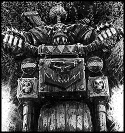

Imperial Forces |
Force Disposition Introduction |
Ork Forces |
|
Razor Speed Freeks The Kults of Speed are most notoriously associated with the Evil Sunz clan, but Orks from other clans also fall under the alluring spell of high speed and thundering war machines. Orks from the Goff clan are renowned for their obsession with close combat and to some Goffs, lightning fast vehicles and fighting their enemies face to face go hand in hand. The Razor Speed Freek tribe is mainly made up of Goffs from the Ork held planet of Deke's World under the iron rule of the Great Despot of Dregruk. Razorhed, the Warlord of the tribe drove the biggest, flashiest, blackest vehicle on the planet, carving himself an empire of hard driving maniacs on heavily kustomised black vehicles. Razorhed didn't believe the old saying about red vehicles going faster and insisted all his boyz drove black buggies and trukks, with black flame patterns, black flags on the banner poles and black razors covering every surface. Black featured heavily in Razorhed's view of how his boyz should look... When Ghazghkull's Waaagh gathered and fell upon the world of Armageddon, Razorhed's adrenaline charged Orks were at the forefront of the invasion, bringing speeding black, razor edged death to their enemies. The Razors already have one notable victory under their belt when Razorhed's boyz helped to destroy four companies of the Celestial Lions Chapter of Space Marines in the Volcanus Mountains. |
Forces of the Great Despot of Dregruk
Despot Gazgrim's War Horde
Warlord Thogfang's Gargant Big Mob
Warlord Rukgor's Gargant Big Mob
Warlord Badfang's Battle Forts
Black Slayers Tribe
Firebellies Tribe
Varga's Drop Legion Razor Speed Freeks (Estimated 7 'artillery' warbands)
|